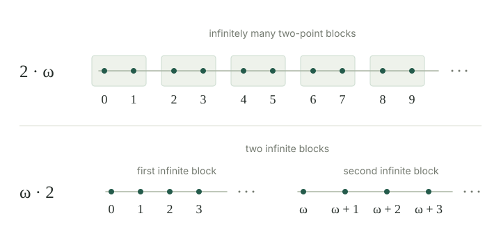

Ordinals describe well-order types. Their arithmetic describes how those orders fit together. For well-ordered sets \(A,B\), form the tagged set \((\{0\}\times A)\cup(\{1\}\times B)\). Keep the order within each part and put every point of the first part before every point of the second. This is the ordered sum.
It is a well-order: a nonempty subset that meets the first part has its least point there; otherwise its least point lies in the second part. The ordinal sum \(\alpha+\beta\) is the unique ordinal of this order type. The tags distinguish points even when the two original sets overlap. Replacing either order by an isomorphic one gives an isomorphic sum.
Ordinal addition satisfies
Proof
An empty second part adds nothing. Appending a successor order adds one last point. At a limit, the portions consisting of the first part and the points below \(\beta\) in the second part are nested initial segments. They cover the whole sum, because every point of \(\lambda\) lies below some larger point of \(\lambda\). Their ordinal representatives are therefore nested initial segments too: uniqueness of order isomorphisms makes the identifications agree. Their union is the ordinal of the entire sum, and a union of ordinals is their supremum. □
These equations also determine addition uniquely by induction over zero, successors, and limits. The order construction supplies the values; the recursion equations describe them. This avoids presuming that all ordinal values belong to a single fixed set.
For every ordinal \(\beta\), \(0+\beta=\beta\), and \(\alpha+1\) is the successor of \(\alpha\). For natural numbers \(m,n\), ordinal \(m+n\) agrees with ordinary addition.
Proof
An empty first part leaves exactly the second order. A singleton second part adds a greatest point. Two finite consecutive blocks have \(m+n\) points in their usual finite order; equivalently, induction on \(n\) applies the successor equation. □
\(1+\omega=\omega\), but \(\omega+1>\omega\). In particular, ordinal addition is not commutative.
Proof
Map the extra first point of \(1+\omega\) to \(0\), and map the point \(n\) of the following block to \(n+1\). This is an order isomorphism onto \(\omega\). In \(\omega+1\), the extra point comes last. Its order type is a proper successor of \(\omega\), which has no greatest point. More generally, \(k+\omega=\omega\) for every finite \(k\), by listing the initial \(k\) points before the remaining natural positions. □
What are \(3+\omega\) and \(\omega+3\)? Are both limit ordinals?
The first is \(\omega\), a limit. The second consists of the natural positions followed by three last positions. It is \(((\omega+1)+1)+1\), a successor with greatest point \(\omega+2\). Moving the finite block from beginning to end changes the order type.
If \(\beta<\gamma\), then \(\alpha+\beta<\alpha+\gamma\). If \(\alpha\le\alpha'\), then \(\alpha+\beta\le\alpha'+\beta\). The latter inequality need not be strict.
Proof
The first sum is a proper initial segment of the second: take the first block and just the first \(\beta\) positions of its second block. Apply comparison by initial segments. For the second assertion, induct on \(\beta\). At zero it is the assumed inequality; at a successor use monotonicity of ordinal successors; at a limit take suprema of the earlier inequalities. □
For example, \(1<2\) but \(1+\omega=2+\omega\). Thus a common left summand can be cancelled, by strictness in the second argument, whereas a common right summand cannot always be cancelled.
If \(\alpha\le\beta\), there is a unique ordinal \(\gamma\) such that \(\alpha+\gamma=\beta\).
Proof
Regard \(\alpha\) as an initial segment of \(\beta\), using ordinal comparison. Give the remaining points \(\beta\setminus\alpha\) their inherited order. They form a well-order; let \(\gamma\) be its order type. Every point of \(\alpha\) precedes every remaining point, so \(\beta\) is the ordered sum \(\alpha+\gamma\). If two remainders worked, strictness in the second argument from would force them to be equal. □
For example, removing the first point of \(\omega\) leaves order type \(\omega\): the equation is \(1+\omega=\omega\). Removing the whole initial segment leaves nothing, so the remainder when \(\alpha=\beta\) is zero.
The position of the unknown matters. There is no ordinal \(\delta\) with \(\delta+1=\omega\), because the left side is a successor with a greatest point, whereas \(\omega\) has none.
Ordinal addition is associative: \((\alpha+\beta)+\gamma=\alpha+(\beta+\gamma)\).
Proof
Both constructions put an \(\alpha\)-block first, a \(\beta\)-block second, and a \(\gamma\)-block third. Removing the nested tags and assigning a tag for the block gives order isomorphisms to the same three-block order. The unique ordinal representatives are equal. □
The ordinal product \(\alpha\cdot\beta\) is the order type of \(\beta\) consecutive copies of \(\alpha\). On \(\beta\times\alpha\), put
The right factor indexes the blocks; the left factor gives the order within each block. A nonempty subset has a least occupied block and then a least point in that block, so the order is a well-order. Its type is independent of the chosen representatives.
The product satisfies
Proof
No blocks give the empty order. A successor number of blocks adds one final \(\alpha\)-block. At a limit, the products with earlier block counts are initial segments covering the product. As in , their ordinal representatives have union equal to its order type. Induction proves uniqueness from the equations. □
Also \(0\cdot\beta=0\), \(1\cdot\beta=\beta\), and \(\alpha\cdot1=\alpha\), directly from the block construction. Finite products agree with ordinary products of natural numbers.
If \(\alpha>0\) and \(\beta<\gamma\), then \(\alpha\cdot\beta<\alpha\cdot\gamma\). For fixed \(\beta\), the product is nondecreasing in \(\alpha\).
Proof
The first \(\beta\) blocks form a proper initial segment of the \(\gamma\)-block order; the remaining blocks are nonempty because \(\alpha>0\). For the second claim, induct on \(\beta\). The successor step uses the induction hypothesis and both monotonicity statements for addition, and the limit step takes suprema. □
The condition \(\alpha>0\) matters: all products with left factor zero are zero.
\(2\cdot\omega=\omega\), while \(\omega\cdot2=\omega+\omega>\omega\). Thus multiplication, like addition, is not commutative.
Proof
For finite \(n\), \(2\cdot n=2n\), and the supremum of these finite ordinals is \(\omega\). Alternatively, send \((n,i)\), for \(i<2\), to \(2n+i\); this lists the two-point blocks in their order. The product \(\omega\cdot2\) has two successive infinite blocks, with the first a proper initial segment. □

Write \(\omega^2\) for \(\omega\cdot\omega\): a first infinite block, then a second, and so on through natural-number many blocks. This notation here denotes the square; general ordinal exponentiation is beyond this entry.
\((\alpha\cdot\beta)\cdot\gamma=\alpha\cdot(\beta\cdot\gamma)\).
Proof
The left side has \(\gamma\) groups, each containing \(\beta\) blocks of type \(\alpha\). Its points can be written as \((c,b,a)\), compared first by \(c\), then \(b\), then \(a\). The right side orders the same triples in exactly that way: its blocks are indexed by the order of pairs \((c,b)\). Rebracketing the tuples is an order isomorphism, including when a factor is empty. □
Ordinal multiplication is left distributive:
Proof
The block index order \(\beta+\gamma\) places the \(\beta\)-indexed blocks first and the \(\gamma\)-indexed blocks second. Separating these groups gives the ordered sum on the right. □
Right distributivity fails: \((1+1)\cdot\omega=2\cdot\omega=\omega\), whereas \(1\cdot\omega+1\cdot\omega=\omega+\omega>\omega\).
Compute \((\omega+1)\cdot2\) and \(2\cdot(\omega+1)\).
The first is \((\omega+1)+(\omega+1)=\omega+(1+\omega)+1=\omega\cdot2+1\), using associativity and \(1+\omega=\omega\). The second is \(2\cdot\omega+2=\omega+2\). In the first product each of two infinite blocks has an extra last point, but the first such point can be absorbed into the beginning of the second block.
If \(\alpha\) and \(\beta\) are countable ordinals, then \(\alpha+\beta\) and \(\alpha\cdot\beta\) are countable as sets.
Proof
The sum has the underlying set of a tagged union of two countable sets; the product has the underlying set \(\beta\times\alpha\). Apply countability of finite unions and finite products. Taking an order isomorphism to the ordinal representative preserves cardinality. □
In particular, \(\omega\), \(\omega+1\), \(\omega\cdot2\), and \(\omega^2\) are all countably infinite, although their well-orders are different. Ordinal arithmetic records those orders; cardinality records only sizes.